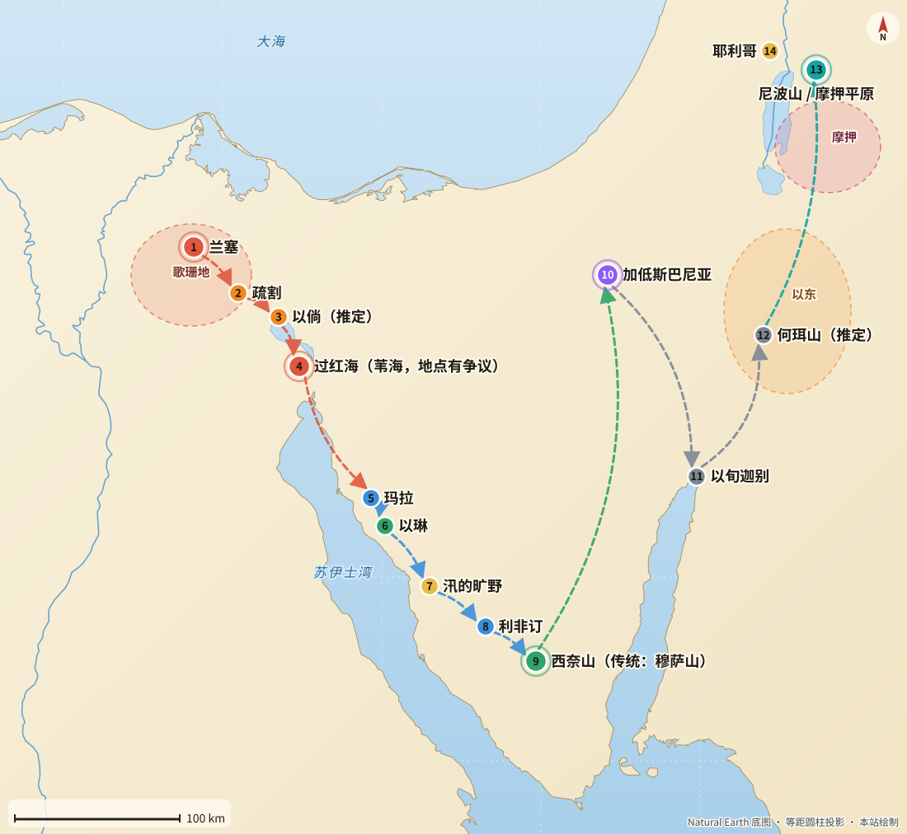
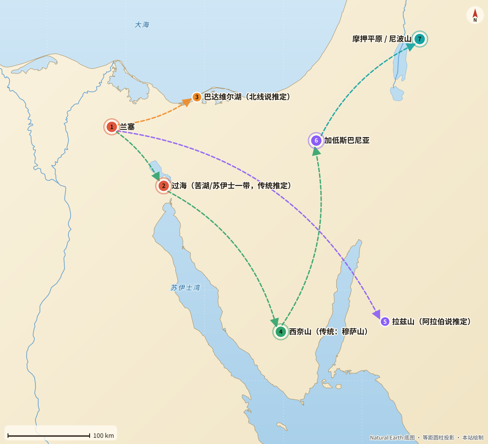

出埃及记 Exodus · שְׁמוֹת
一句话：耶和华记念祂与亚伯拉罕的约，用大能的手救赎以色列脱离埃及为奴之家，在西奈与他们立约，并降临住在他们中间。三段：救赎（1–18）→ 立约（19–24）→ 同住（25–40）。
笔记标记图例
- 核心教义 红底 · 红实线
- 钥节金句 金底 · 金实线
- 历史背景 蓝底 · 蓝实线
- 基督 / 圣约 紫底 · 紫实线
- 生活应用 绿底 · 绿实线
- 难点疑义 玫红底 · 虚线
- 波浪线 特别提醒 / 易混点
📌一、总纲
💎1.1核心一把抓
⭐1.2钥节与一句话
神对摩西说：「我是自有永有的」；又说：「你要对以色列人这样说：『那自有的打发我到你们这里来。』」— 出3:14（和合本）
所以你要对以色列人说：『我是耶和华；我要用伸出来的膀臂重重地刑罚埃及人，救赎你们脱离他们的重担，不做他们的苦工。我要以你们为我的百姓，我也要作你们的神。你们要知道我是耶和华―你们的神，是救你们脱离埃及人之重担的。— 出6:6-7（和合本）
这血要在你们所住的房屋上作记号；我一见这血，就越过你们去。我击杀埃及地头生的时候，灾殃必不临到你们身上灭你们。」— 出12:13（和合本）
如今你们若实在听从我的话，遵守我的约，就要在万民中作属我的子民，因为全地都是我的。你们要归我作祭司的国度，为圣洁的国民。』这些话你要告诉以色列人。」— 出19:5-6（和合本）
「我是耶和华―你的神，曾将你从埃及地为奴之家领出来。「除了我以外，你不可有别的神。— 出20:2-3（和合本）
耶和华在他面前宣告说：「耶和华，耶和华，是有怜悯有恩典的神，不轻易发怒，并有丰盛的慈爱和诚实，为千万人存留慈爱，赦免罪孽、过犯，和罪恶，万不以有罪的为无罪，必追讨他的罪，自父及子，直到三、四代。」— 出34:6-7（和合本）
当时，云彩遮盖会幕，耶和华的荣光就充满了帐幕。— 出40:34（和合本）
🏺1.3背景：时间、处境与真实历史
- 作者
- 摩西（出17:14；24:4；34:27；可12:26「摩西的书……荆棘篇」）。
- 时间
- 出埃及约前1446年（王上6:1 早期说）；全书涵盖约80年（摩西出生到会幕立起），主体是出埃及后第一年。
- 处境
- 埃及新王国时期（第十八王朝，早期说）；另一主流看法为第十九王朝拉美西斯二世时期（约前1260，晚期说）。
- 地点
- 歌珊（尼罗河三角洲东部）→ 疏割 → 以倘 → 红海（苇海）→ 玛拉、以琳 → 汛的旷野 → 利非订 → 西奈山。
- 积货城比东、兰塞（1:11）：兰塞一般认同为三角洲的 Pi-Ramesses（今 Qantir 一带）；地名可能是后来更新的称呼（参创47:11 已用「兰塞境内」）。
- 用草做砖（5:7）：埃及泥砖掺草秸，壁画（如 Rekhmire 墓）描绘外族奴工制砖。
- 美尼普塔石碑（约前1208，开罗博物馆）：最早在圣经之外提到「以色列」，表明此时以色列已是迦南的一个民族。
- 埃及人普遍以法老为神之子、玛阿特（秩序）的维护者——十灾正是对此的挑战。
🎯1.4为什么写：认识耶和华
全书反复出现一句话：「知道我是耶和华」（6:7；7:5、17；14:4、18；29:46）——以色列人与埃及人都要认识祂。神行事的目的是启示自己的名：祂是信守约的神（2:24），是救赎主，是圣洁、要住在民中的神。
神听见他们的哀声，就记念他与亚伯拉罕、以撒、雅各所立的约。— 出2:24（和合本）
🧾1.5大纲
| 段落 | 经文 | 内容 | 重点 |
|---|---|---|---|
| 一、为奴 | 1 | 以色列人增多，法老压迫 | 神的应许在受苦中成就（创15:13） |
| 二、拯救者的预备 | 2–4 | 摩西出生、逃往米甸、荆棘中的呼召 | 「我必与你同在」（3:12） |
| 三、与法老的争战 | 5–11 | 九灾 | 耶和华与埃及诸神 |
| 四、逾越节与出埃及 | 12–13 | 第十灾、逾越节、无酵节、头生归神 | 羔羊的血 |
| 五、过红海 | 14–15 | 海中走干地；摩西之歌 | 「耶和华是战士」（15:3） |
| 六、旷野的引导 | 15:22–18 | 玛拉、吗哪、磐石出水、亚玛力、叶忒罗 | 每日的供应与试验 |
| 七、西奈立约 | 19–24 | 十诫、约书（21–23）、立约之血 | 「这是立约的血」（24:8） |
| 八、会幕的指示 | 25–31 | 约柜、桌子、灯台、祭坛、祭司 | 照山上的样式（25:40） |
| 九、背约与更新 | 32–34 | 金牛犊、摩西代求、神的荣耀经过 | 神的名（34:6–7） |
| 十、会幕建成 | 35–40 | 百姓甘心乐意奉献，会幕立起 | 荣耀充满帐幕 |
🧵二、叙事与时间
🧵2.1故事线与因果
一、为奴与呼召（1–4）
雅各的后裔「生养众多」（1:7，呼应创1:28），新法老恐惧而压迫，甚至下令杀男婴。收生婆敬畏神；摩西被放在蒲草箱（希伯来文与「方舟」同字 tēbâ）中得救。四十岁杀埃及人逃往米甸；八十岁在何烈山的荆棘火焰中蒙召。
又说：「我是你父亲的神，是亚伯拉罕的神，以撒的神，雅各的神。」摩西蒙上脸，因为怕看神。— 出3:6（和合本）
主耶稣用这节证明身体复活（太22:32）：神是「活人的神」。
二、十灾（5–11）
法老说：「耶和华是谁，使我听他的话……？」（5:2）十灾就是答案。灾祸呈三组三灾，加上第十灾：
| 组 | 灾 | 可能针对的埃及信仰（学者常见对照） | 区别 |
|---|---|---|---|
| 第一组 | ① 血 ② 蛙 ③ 虱 | 尼罗河神哈比（Hapi）；蛙头女神赫克特（Heqet） | 术士能仿①②，到③承认「这是神的手段」（8:19） |
| 第二组 | ④ 蝇 ⑤ 畜疫 ⑥ 疮 | 牛神阿庇斯（Apis）、哈托尔（Hathor）；医疗神 | 从④起分别歌珊（8:22–23） |
| 第三组 | ⑦ 雹 ⑧ 蝗 ⑨ 黑暗 | 天空女神努特（Nut）；太阳神拉（Ra/Amun-Ra） | 「埃及遍地乌黑了三天」，以色列人家中却有亮光（10:23） |
| 高潮 | ⑩ 长子之死 | 法老本身（被视为神之子）与其继承人 | 唯有羊羔的血可庇护 |
因为那夜我要巡行埃及地，把埃及地一切头生的，无论是人是牲畜，都击杀了，又要败坏埃及一切的神。我是耶和华。— 出12:12（和合本）
三、逾越节与红海（12–15）
每家取无残疾的一岁公羊羔，血涂门框，吃烤羊肉、无酵饼、苦菜。「我一见这血，就越过你们去」（12:13）。以色列人出埃及，神以云柱火柱引导，在海中开路，埃及军兵淹没。摩西与米利暗歌唱（15）。
四、旷野（15:22–18）
三天找不到水就发怨言（15:24）。神使苦水变甜、降吗哪与鹌鹑、使磐石出水（17:6，林前10:4「那磐石就是基督」）。安息日的吗哪原则（16:22–30）在西奈颁律之前已经教导。
五、西奈（19–24）
第三个月到西奈（19:1）。神说以色列要「归我作祭司的国度，为圣洁的国民」（19:6，参彼前2:9）。十诫以「我是耶和华你的神」为序言——先有救赎，后有律法。约书（21–23）把十诫应用在社会生活中。24章以血立约，七十长老「观看神，他们又吃又喝」（24:11）。
摩西将血洒在百姓身上，说：「你看！这是立约的血，是耶和华按这一切话与你们立约的凭据。」— 出24:8（和合本）
六、金牛犊与恩典（32–34）
就在摩西领受会幕样式时，百姓在山下造金牛犊，说「这是领你出埃及地的神」（32:4）——违背第二诫，以错误方式敬拜耶和华。摩西代求，甚至愿意从神的册上被涂抹（32:32）。神宣告自己的名：有怜悯、有恩典、不轻易发怒……也必不以有罪的为无罪（34:6–7），并重新立约（34:10）。
七、会幕立起（35–40）
百姓「甘心乐意」献上（35:29），比撒列被神的灵充满（31:3；35:31）。第二年正月初一会幕立起（40:17），「耶和华的荣光就充满了帐幕」（40:34）——从伊甸被逐之后，神再一次「住在」人中间。
⏳2.2时间线
🗺️三、地理与文化
🗺️3.1地图与历史：出埃及路线诸说 · 会幕安营
出埃及主路线（传统南线）

真实地理底图：Natural Earth（公有领域）海岸线、河流、湖泊，本站本地绘制，无第三方地图服务。红线＝出埃及与过海；蓝线＝往西奈；绿线＝往加低斯；灰线＝漂流与绕行（民33；21:4）；地点多为通行推定。古代地点多为学界通行推定，标“推定/有争议”处尚无定论。
- 1兰塞 Rameses (Qantir) · 出12:37
以色列人从兰塞起行（今 Qantir 一带）。 - 2疏割 Succoth (Tell el-Maskhuta) · 出12:37；13:20
第一站；神用云柱火柱引路。 - 3以倘（推定） Etham · 出13:20
在旷野边。 - 4过红海（苇海，地点有争议） Yam Suph crossing (?) · 出14
神分开海水，以色列人走干地；法老的军兵淹没。具体地点有苦湖、苏伊士湾等多说。 - 5玛拉 Marah · 出15:23–25
苦水变甜：“我耶和华是医治你的”。 - 6以琳 Elim · 出15:27
十二股水泉、七十棵棕树。 - 7汛的旷野 Wilderness of Sin · 出16
降吗哪与鹌鹑；开始守安息日的操练。 - 8利非订 Rephidim · 出17
击石出水（玛撒、米利巴）；摩西举手，以色列胜亚玛力。 - 9西奈山（传统：穆萨山） Jebel Musa · 出19–民10
颁布十诫、立约、建造会幕，停留约 11 个月。 - 10加低斯巴尼亚 Kadesh-barnea · 民13–14；20
十二探子回报；百姓不信，被罚漂流 40 年；米利暗死于此。 - 11以旬迦别 Ezion-geber · 民33:35–36；申2:8
漂流途中的一站，亚喀巴湾北端。 - 12何珥山（推定） Mount Hor (?) · 民20:22–29
亚伦死于此山，以利亚撒接续大祭司职分。 - 13尼波山 / 摩押平原 Mount Nebo / Plains of Moab · 民22–申34
巴兰事件、第二次数点、申命记讲论；摩西死于尼波山。 - 14耶利哥 Jericho · 书2–6
约旦河对岸第一座城；进迦南的门户。
- 起点兰塞（今 Qantir / 皮-兰塞一带）有考古对应。
- 过「苇海」（Yam Suph）地点有苦湖、苏伊士湾、亚喀巴湾等说，经文重点是耶和华使海分开。
- 出13:17 明确不走「非利士地的路」。
路线诸说对照

真实地理底图：Natural Earth（公有领域）海岸线、河流、湖泊，本站本地绘制，无第三方地图服务。绿线＝传统南线（本站默认）；橙线＝北线说方向；紫线＝过亚喀巴湾至拉兹山说。均为推定。古代地点多为学界通行推定，标“推定/有争议”处尚无定论。
- 1兰塞 Rameses · 出12:37
出埃及起点。 - 2过海（苦湖/苏伊士一带，传统推定） Yam Suph (?) · 出14
传统南线常把过海放在苦湖或苏伊士湾北端。 - 3巴达维尔湖（北线说推定） Lake Bardawil (?) · 学说
北线说把苇海与地中海沿岸潟湖相联系（有争议）。 - 4西奈山（传统：穆萨山） Jebel Musa · 出19
传统南线的立约之山。 - 5拉兹山（阿拉伯说推定） Jebel al-Lawz (?) · 学说
部分人主张西奈在米甸/阿拉伯半岛（有争议，非主流学术共识）。 - 6加低斯巴尼亚 Kadesh-barnea · 民13
南地绿洲，探子出发之地。 - 7摩押平原 / 尼波山 Nebo / Moab · 民22–申34
旅程终点前的营地。
三种路线都是学术/传统推定，不可把坐标当成信条。
- 传统南线：过海后南下穆萨山（本站默认，4世纪起的朝圣传统）。
- 北线说：把苇海与地中海沿岸潟湖（巴达维尔湖）相联系，仍属推定。
- 米甸/阿拉伯说：或引加4:25，主张过亚喀巴湾至拉兹山；保罗所说「阿拉伯」范围很广，此说缺乏共识。
西奈山下：会幕与十二支派安营
🌍3.2古代近东文化：律法与圣约的形式
| 对照 | 近东 | 出埃及记 |
|---|---|---|
| 宗主条约（赫梯，前14–13世纪） | 序言（宗主名号）→ 历史引言（宗主的恩惠）→ 条款 → 存放与宣读 → 见证（众神）→ 祝福与咒诅 | 20:2a「我是耶和华你的神」（序言）→ 20:2b「曾将你从埃及地……领出来」（历史引言）→ 十诫（条款）→ 法版放在约柜里（25:16）。见证不是众神，而是天地与律法本身（申31–32）。 |
| 汉谟拉比法典（约前1750） | 依阶级（贵族/平民/奴隶）定不同刑罚；财产罪可判死刑；刻在石碑上由王颁布 | 约书不按阶级区别人命价值（21:12）；财产罪以赔偿处理（22:1）；特别保护寄居者、寡妇、孤儿（22:21–24），因为「你们在埃及地也作过寄居的」。律法出于救赎的神，不是王的智慧。 |
| 「以眼还眼」（21:24） | 同态复仇在近东常见 | 本意是法庭量刑的上限与公平原则，不是私人报复（太5:38–39 主耶稣纠正把它用在私人报复上的误用）。 |
| 移动神殿与帐篷 | 埃及有可移动的神龛与王帐；学者常比较拉美西斯二世在卡叠什战役中的营帐布局 | 会幕是可搬移的「圣所」，但里面没有神像——约柜上的施恩座是神「施恩」与「说话」之处（25:22）。 |
| 金牛犊 | 埃及的阿庇斯牛、迦南的巴力常以公牛为象征 | 百姓把耶和华降格为偶像（32:5「明日要向耶和华守节」）——第二诫的反面教材（海德堡96–98）。 |
✝️四、神学
✝️4.1圣经神学：出埃及记如何指向基督
🤝4.2圣约神学：西奈之约是恩典之约的一种施行
改革宗普遍承认：西奈之约不是另一条「靠行为得救」之路，而是恩典之约在旧约时代的施行，带有教导性的律法、预表性的礼仪和以色列国的民法。
改革宗普遍认同摩西之约是恩典之约的一种施行方式。
📜4.3信条对照（CCI 原文逐字）
一、除了我以外，你不可有别的神。
二、不可为自己雕刻偶像；也不可做什么形像仿佛上天、下地和地底下、水中的百物。不可跪拜那些像；也不可侍奉它，因为我耶和华你的神，是忌邪的神。恨我的，我必追讨他的罪，自父及子，直到三四代；爱我、守我诫命的， 我必向他们发慈爱，直到千代。
三、不可妄称耶和华你神的名；因为妄称耶和华名的，耶和华必不以他为无罪。
四、当记念安息日，守为圣日。六日要劳碌作你一切的工， 但第七日是向耶和华你神当守的安息日。这一日你和你的儿女、仆婢、牲畜，并你城里寄居的客旅，无论何工都不可做，因为六日之内，耶和华造天、地、海和其中的万物，第七日便安息，所以耶和华赐福与安息日，定为圣日。
五、当孝敬父母，使你的日子在耶和华你神所赐你的地上得以长久。
六、不可杀人。
七、不可奸淫。
八、不可偷盗。
九、不可作假见证陷害人。
十、不可贪恋人的房屋；也不可贪恋人的妻子、仆婢、牛驴，并他一切所有的。”1
出于这个原因，神吩咐说一切属他的人都要用清水受洗归入圣父、圣子、圣灵的名（参见太28:19）。藉此他表明，正如水浇在或洒在身上就洗去污垢一样，藉着圣灵，基督的血同样浇在我们心里3，洗去我们的罪，使我们的灵魂得洁净4；圣灵使我们重生，将我们从可怒之子变为神的儿女5。这一切不是洗礼之水所带来的功效6，而是靠着神的儿子流宝血成就的7。他所流的宝血是我们的红海8，我们必须穿行红海才能逃脱法老，即撒但的辖制，进入属灵的迦南美地。
全能永在的神，你施行公义的审判，用洪水惩罚了不信和悖逆的世人，因着恩慈，你拯救并保守了信你的挪亚和他的全家。你使顽梗的法老及其军兵葬身红海，却带领你的百姓以色列民在海中走干地——这正是洗礼的象征。
神不仅极其仁慈，也极其公义。正如他自己在圣经中所启示的那样1，按着神公义的要求，我们当为冒犯他无限的威严而受刑罚2。 我们的身体和灵魂不但要受暂时的刑罚， 也要受永远的刑罚；除非神的公义得到满足，否则，我们无法逃脱这样的刑罚。
🌱五、研习与记忆
🧩5.1难点解析
🧩 是神使法老心刚硬，还是法老自己刚硬？
两者都有：经文说法老「心里刚硬」（7:13、22；8:15「法老……就硬着心」），也说「耶和华使法老的心刚硬」（9:12；10:20）。神预先告诉摩西（4:21），罗9:17–18 引用9:16。神没有把恶放进无辜的心里，而是在公义的审判中任凭一个已经抗拒神的人更加刚硬。
圣经向我们阐明了这一永恒不变的、人所不配得的拣选。它特别作进一步宣告说，并非所有人都蒙了拣选；有些人没有被拣选，换言之，神有意不选他们1。神出于他至高的主权和极公义、无可指摘、不变的美意，预定任凭后者留在因人自己的过错而陷入的愁苦中2，不将得救的信心与归信的恩典赐给他们。按着神的定旨，为了神的公义得以彰显，这些各行其道3、落在神公义的审判之下的人最终将因其不信和其他诸罪受到永远的定罪和刑罚。这就是有关弃绝的定旨，它绝不会使神成为罪恶之源（就连有这种念头都是亵渎神的），只会宣告他是可畏的、无可指摘的、公义的审判者与施报应的神。
🧩 六十万男丁（12:37）可能吗？
连妇孺约二百万人。有人主张希伯来文 ʾeleph 可理解为「宗族/队」而非「千」，以降低人数；但民1、26 的总和（603,550 / 601,730）与赎价银数（出38:25–26）相合，多数保守解经仍取字面数字，并承认旷野中的供应本身就是神迹（申8:3–4）。
🧩 「以眼还眼」是不是野蛮？
它限制过度报复，确保刑罚与罪相称，并由审判官执行（申19:18–21）。在近东，贵族伤平民只需赔钱；在以色列，人命同等宝贵（21:12、20；创9:6）。
🧩 金牛犊之后，为什么神仍然与以色列同行？
因为恩典之约的根基是神自己的名和应许（32:13 摩西提出神向亚伯拉罕、以撒、以色列所起的誓）。海德堡要理问答第12问说神的公义要求满足——最终由基督偿还（来9:15）。
🧩 第二诫只是禁止敬拜别神的像吗？
金牛犊表明：用像来敬拜真神同样违背第二诫。海德堡第96问：「也不可用任何他在圣经中没有吩咐过的方式来敬拜他」（敬拜的规范原则）。
🔍5.2多角度阅读
| 角度 | 看见什么 |
|---|---|
| 历史 | 埃及新王国、闪族在三角洲、泥砖与积货城、美尼普塔石碑。 |
| 文学 | 十灾三组结构；「知道我是耶和华」的重复；会幕「指示」（25–31）与「建造」（35–40）的平行，中间夹着金牛犊。 |
| 神学 | 神的名（3:14；34:6–7）、神的主权、神的同在。 |
| 礼拜 | 逾越节—圣餐（海德堡75–80 的背景）；红海—洗礼（林前10:1–2；比利时信条34）；敬拜要照神所吩咐（25:40）。 |
| 伦理 | 十诫是爱神爱人的总纲；保护弱者；工作与安息。 |
🌱5.3应用
🧠5.4记忆卡与测验
❓ 十诫在海德堡要理问答中属于哪一部分？
❓ 比利时信条第34条说什么是「我们的红海」？
❓ 第几灾起神分别歌珊？
❓ 「那磐石就是基督」出自？
❓ 金牛犊主要违背第几诫？
🎬5.5动画导览（点击后播放）
点击封面后才加载播放器，不自动播放。视频为圣经工程（BibleProject）官方普通话概述，作结构导览；本站神学立场以欧陆改革宗三项联合信条为准。